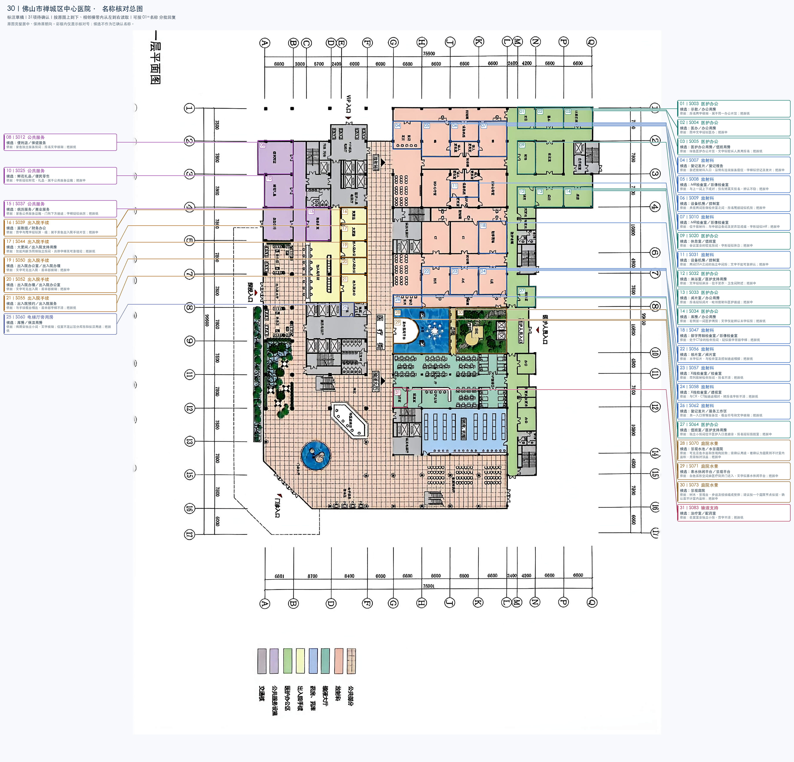
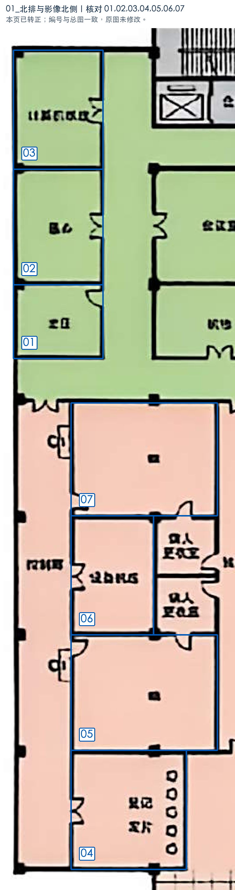
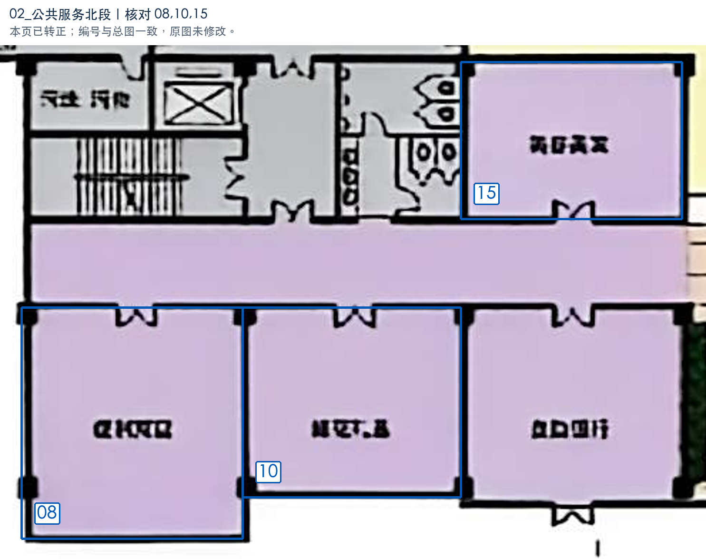
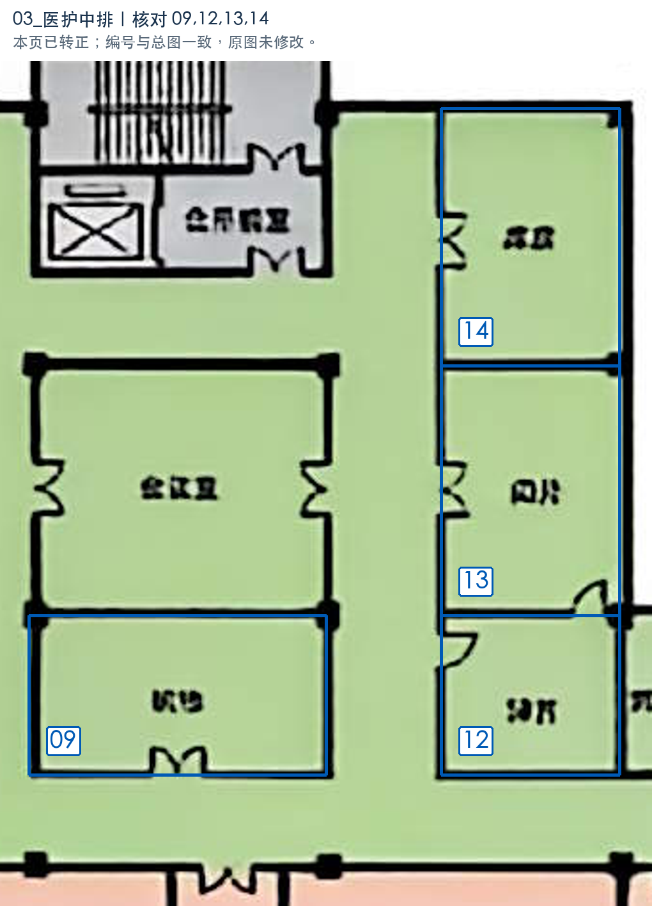
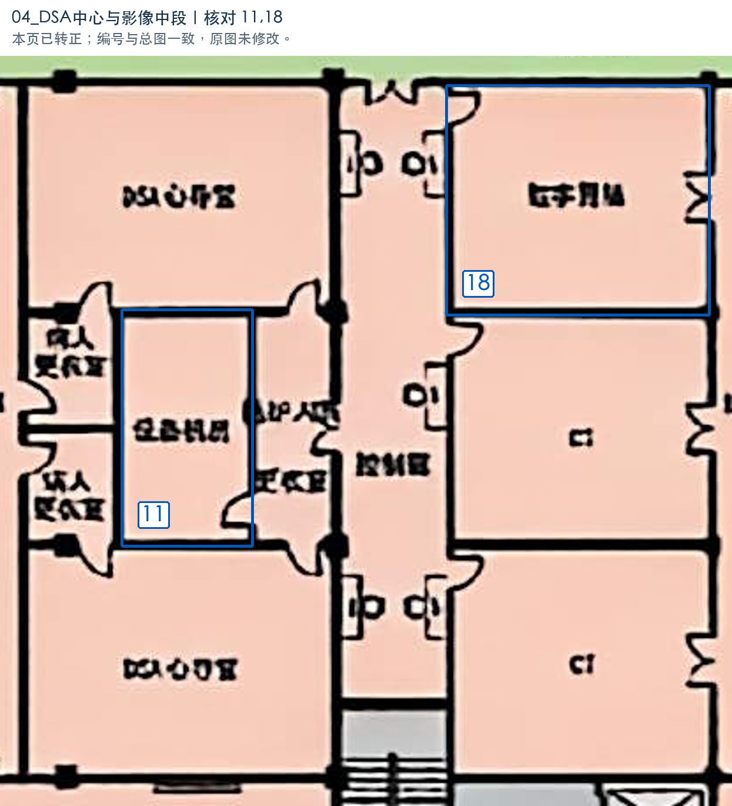
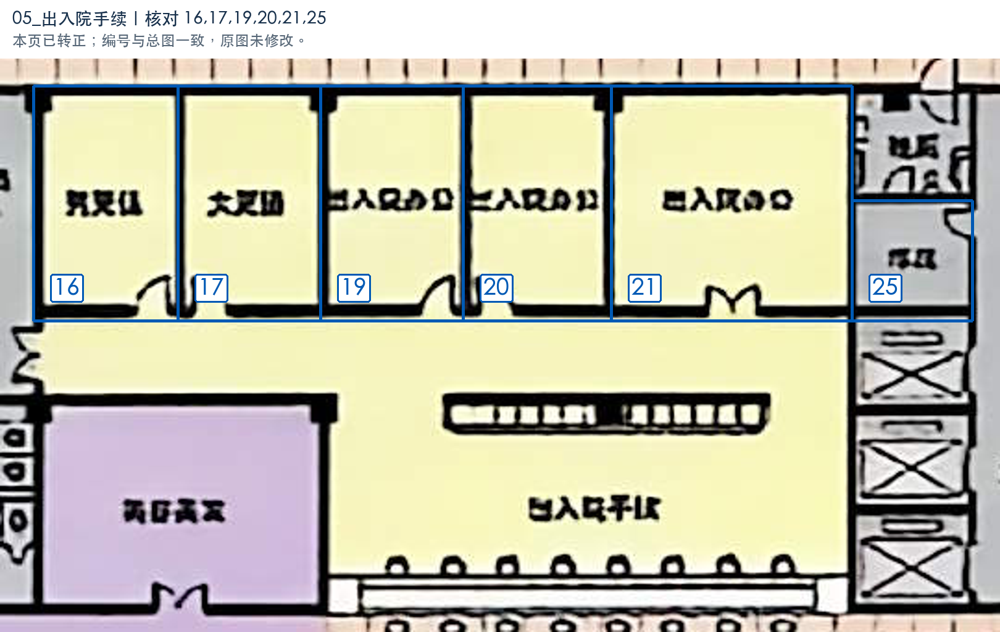
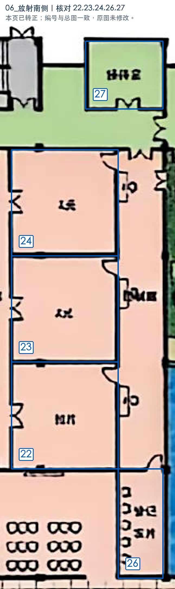
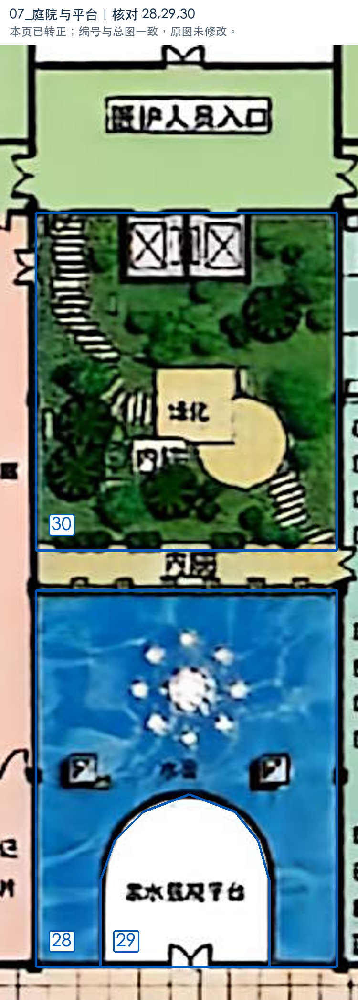
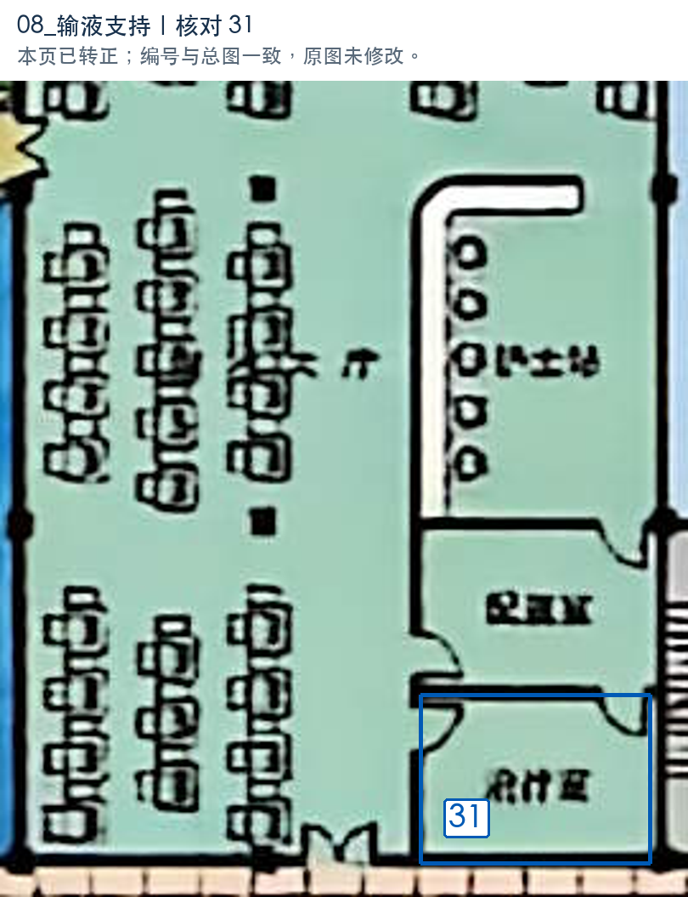
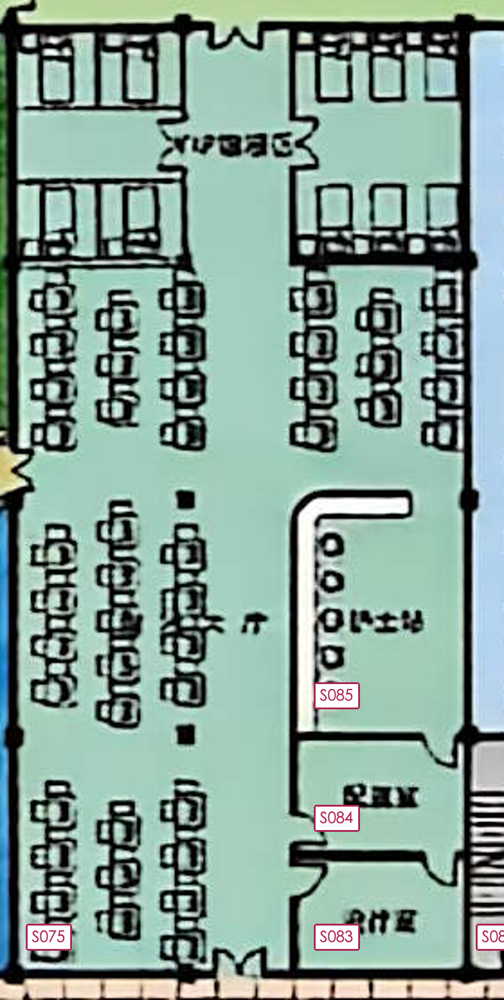

未完成：31 个空间名称尚未确认。
标注规模：97 个空间／区域，开放空间 24 个、房间级单元 46 个、交通核 10 个、功能块 11 个、半墙服务区 3 个、绿化 3 个。
类型与数量：通道 12 个、未确认功能 31 个、交通核 10 个、污物处理 1 个、大厅 12 个、患者准备 4 个、办公 3 个、影像检查 4 个、卫生间 5 个、工作人员支持用房 5 个、商业服务 1 个、服务工作区 1 个、绿化 3 个、门斗 1 个、服务区 1 个、处置治疗 1 个、护士站 1 个、药房 1 个。
连接关系：121 条，人员可达 110 条、服务联系 6 条、入口连接 5 条。
入口：VIP入口、探视入口、门诊入口、医护人员入口、自助银行外门。
相对规模：室内非重叠标注区域的 area_ratio 合计为 1；绿化不参与。具体物理尺寸由生成环节按任务确定。施工级门构造及内部精确路线不纳入数据。
门洞与开口：74 个红点，对应 74 条人员可达关系；其中门洞 74 个、无门开口 0 个。同一空间对可有多个开口，关系仍按空间对归并。其余 36 条人员可达关系无定位红点；区域连续及半墙等概念连通不编造门位，服务窗口及共墙不作为通行红点。
名称待确认：S003 名称未确认、S004 名称未确认、S005 名称未确认、S007 名称未确认、S008 名称未确认、S009 名称未确认、S010 名称未确认、S012 名称未确认、S020 名称未确认、S025 名称未确认、S031 名称未确认、S032 名称未确认、S033 名称未确认、S034 名称未确认、S037 名称未确认、S039 名称未确认、S044 名称未确认、S047 名称未确认、S050 名称未确认、S052 名称未确认、S055 名称未确认、S056 名称未确认、S057 名称未确认、S058 名称未确认、S060 名称未确认、S062 名称未确认、S064 名称未确认、S070 名称未确认、S071 名称未确认、S073 名称未确认、S083 名称未确认。此图尚不能宣布打标完成。
本图范围：原图所示完整一层，包括放射科、输液大厅、药房及药库、医护办公区、出入院手续、公共服务设施、医疗街和门诊／出入院大厅。按各自 scope 区分功能，不将整层统一视为普通门诊诊室。
编号与范围精度：S001—S097 以原图朝向的相邻横带自上而下、同带从左到右组织。交通核按整体节点保存；大厅因围绕独立服务台、水景、绿化和扶梯而分段，各段均非独立封闭房间。室内家具、座椅及轴线不另拆为房间。可直接辨读的原名或明确可识别的空间功能写入名称，其余保留名称未确认与 unknown。
庭院及面积边界：S070（水景）、S071（弧形平台）和 S073（景观区域）仍待确认用途，目前保持 unknown，暂计入归一化分母。确认为庭院、内庭院或挑空后，统一采用 courtyard／open_space 并移出室内面积分母，不取决于是否有顶盖或可步入；最终比例以确认后的归一化结果为准。S065、S067、S091 景观绿化与水景按 landscape 排除，不代表其它待确认水景的面积属性已经明确。
关系精度：仅记录可见门、连续开口或柜台支持的概念联系；未写关系不表示不存在。服务联系与人员可达分别保存，不用共墙或相邻自动补可达边，不表达患者／医护门禁权限。大厅分段间的连续边界表示同一公共空间中的连续通行；没有构造内部精确路线。原图文件保持不变。
沿用原核对号01—31和S编号；可以分批填写，不重新编号。可修改“预估名称（可改）”后把确认栏填为“已确认”，或直接在确认栏写实际名称；也可聊天回复 01=名称。候选均未写入核心JSON。


| 核对号 | S编号 | 预估名称（可改） | 备选名称 | 依据与把握 | 我的确认／备注 | 核对号（重复） |
|---|---|---|---|---|---|---|
| 01 | S003 | 示教 | 办公用房 | 房名两字模糊，属于同一办公片区；各候选共用上述依据，现有证据不能区分。把握：低。 | 待确认 | 01 |
| 02 | S004 | 医办 | 办公用房 | 图中文字疑似医办；各候选共用上述依据，现有证据不能区分。把握：中。 | 待确认 | 02 |
| 03 | S005 | 医护办公用房 | 值班用房 | 绿色医护办公片区，文字似较长人员用房名；各候选共用上述依据，现有证据不能区分。把握：低。 | 待确认 | 03 |
| 04 | S007 | 登记发片 | 登记报告 | 靠近放射科入口，沿侧有连续服务座位，字样似登记及发片；各候选共用上述依据，现有证据不能区分。把握：中。 | 待确认 | 04 |
| 05 | S008 | MR检查室 | 影像检查室 | 与上一间上下成对；仅有短英文房名，辨认不稳；各候选共用上述依据，现有证据不能区分。把握：中。 | 待确认 | 05 |
| 06 | S009 | 设备机房 | 控制室 | 夹在两间影像检查室之间，房名尾部疑似机房；各候选共用上述依据，现有证据不能区分。把握：中。 | 待确认 | 06 |
| 07 | S010 | MR检查室 | 影像检查室 | 位于放射科；与中部设备间及更衣区成组，字形疑似MR；各候选共用上述依据，现有证据不能区分。把握：中。 | 待确认 | 07 |

| 核对号 | S编号 | 预估名称（可改） | 备选名称 | 依据与把握 | 我的确认／备注 | 核对号（重复） |
|---|---|---|---|---|---|---|
| 08 | S012 | 便利店 | 保健服务 | 紫色独立服务房间；房名文字模糊；各候选共用上述依据，现有证据不能区分。把握：低。 | 待确认 | 08 |
| 10 | S025 | 鲜花礼品 | 便民零售 | 字形疑似鲜花、礼品，属于公共服务设施；各候选共用上述依据，现有证据不能区分。把握：中。 | 待确认 | 10 |
| 15 | S037 | 病历服务 | 商业服务 | 紫色公共服务设施，门向下方通道；字样疑似病历；各候选共用上述依据，现有证据不能区分。把握：低。 | 待确认 | 15 |

| 核对号 | S编号 | 预估名称（可改） | 备选名称 | 依据与把握 | 我的确认／备注 | 核对号（重复） |
|---|---|---|---|---|---|---|
| 09 | S020 | 休息室 | 值班室 | 会议室旁的较宽房间，字形疑似休息；各候选共用上述依据，现有证据不能区分。把握：中。 | 待确认 | 09 |
| 12 | S032 | 淋浴室 | 医护支持用房 | 文字疑似淋浴，位于更衣、卫生间附近；各候选共用上述依据，现有证据不能区分。把握：中。 | 待确认 | 12 |
| 13 | S033 | 阅片室 | 办公用房 | 房名疑似阅片，毗邻放射科医护通道；各候选共用上述依据，现有证据不能区分。把握：中。 | 待确认 | 13 |
| 14 | S034 | 库房 | 办公用房 | 右侧第一间医护用房；文字仅能辨认末字似房；各候选共用上述依据，现有证据不能区分。把握：低。 | 待确认 | 14 |

| 核对号 | S编号 | 预估名称（可改） | 备选名称 | 依据与把握 | 我的确认／备注 | 核对号（重复） |
|---|---|---|---|---|---|---|
| 11 | S031 | 设备机房 | 控制室 | 两间DSA之间的独立中间房；文字不能可靠辨认；各候选共用上述依据，现有证据不能区分。把握：中。 | 待确认 | 11 |
| 18 | S047 | 数字胃肠检查室 | 影像检查室 | 处于CT旁的检查房间，疑似数字胃肠字样；各候选共用上述依据，现有证据不能区分。把握：低。 | 待确认 | 18 |

| 核对号 | S编号 | 预估名称（可改） | 备选名称 | 依据与把握 | 我的确认／备注 | 核对号（重复） |
|---|---|---|---|---|---|---|
| 16 | S039 | 算账组 | 财务办公 | 首字与尾字疑似算、组；属于黄色出入院手续片区；各候选共用上述依据，现有证据不能区分。把握：中。 | 待确认 | 16 |
| 17 | S044 | 大更间 | 出入院支持用房 | 仅能判断为同排独立房间，具体字样无可靠结论；各候选共用上述依据，现有证据不能区分。把握：低。 | 待确认 | 17 |
| 19 | S050 | 出入院办公室 | 出入院办理 | 文字可见出入院，后半部模糊；各候选共用上述依据，现有证据不能区分。把握：中。 | 待确认 | 19 |
| 20 | S052 | 出入院办理 | 出入院办公室 | 文字可见出入院，后半部模糊；各候选共用上述依据，现有证据不能区分。把握：中。 | 待确认 | 20 |
| 21 | S055 | 出入院预约 | 出入院服务 | 与手续柜台相连，后半部字样不清；各候选共用上述依据，现有证据不能区分。把握：低。 | 待确认 | 21 |
| 25 | S060 | 库房 | 保洁用房 | 残厕旁独立小间，文字模糊；位置不足以区分库房和保洁用途；各候选共用上述依据，现有证据不能区分。把握：低。 | 待确认 | 25 |

| 核对号 | S编号 | 预估名称（可改） | 备选名称 | 依据与把握 | 我的确认／备注 | 核对号（重复） |
|---|---|---|---|---|---|---|
| 22 | S056 | 拍片室 | 阅片室 | 末字似片，与检查室及控制通道相接；各候选共用上述依据，现有证据不能区分。把握：低。 | 待确认 | 22 |
| 23 | S057 | X线检查室 | 检查室 | 同列放射检查房间，房名不清；各候选共用上述依据，现有证据不能区分。把握：低。 | 待确认 | 23 |
| 24 | S058 | X线检查室 | 透视室 | 与CR、CT隔通道相对，短房名字形不清；各候选共用上述依据，现有证据不能区分。把握：低。 | 待确认 | 24 |
| 26 | S062 | 登记发片 | 服务工作区 | 另一入口侧窄服务区，柜台符号和文字模糊；各候选共用上述依据，现有证据不能区分。把握：低。 | 待确认 | 26 |
| 27 | S064 | 值班室 | 医护支持用房 | 独立小房间位于医护入口走廊旁，房名疑似值班室；各候选共用上述依据，现有证据不能区分。把握：中。 | 待确认 | 27 |

| 核对号 | S编号 | 预估名称（可改） | 备选名称 | 依据与把握 | 我的确认／备注 | 核对号（重复） |
|---|---|---|---|---|---|---|
| 28 | S070 | 景观水池 | 水景庭院 | 可见蓝色水面和景观构筑物；需确认用途。若确认为庭院则不计室内面积，无需核对顶盖；各候选共用上述依据，现有证据不能区分。把握：中。 | 待确认 | 28 |
| 29 | S071 | 亲水休闲平台 | 景观平台 | 白色弧形空间由医疗街开门进入，文字似亲水休闲平台；各候选共用上述依据，现有证据不能区分。把握：中。 | 待确认 | 29 |
| 30 | S073 | 景观庭院 | 暂无可靠备选 | 树木、景观台、步道及楼梯组成整体；建议按一个庭院节点保留，确认后不计室内面积；把握：中。 | 待确认 | 30 |

| 核对号 | S编号 | 预估名称（可改） | 备选名称 | 依据与把握 | 我的确认／备注 | 核对号（重复） |
|---|---|---|---|---|---|---|
| 31 | S083 | 治疗室 | 配药室 | 处置室旁独立小房，首字不清；各候选共用上述依据，现有证据不能区分。把握：低。 | 待确认 | 31 |
本轮按原图纠正直接连接，并定位74个清晰门洞；均已写入JSON并在SVG画红点。现有121条关系：人员可达110条、服务联系6条、入口5条。其中74条access有定位，36条为未定位概念连接。
本轮不细究的内部细节：卫生间、交通核和庭院功能块内部不进一步拆小间；柜台窗口不作为人员门洞。未定位概念关系不等于不连通，未记录关系也不作为不可达的负例。

问题：S084原来记录为“处置室”，放大后字形疑似“配药室”，是否改为配药室？ 我的判断：倾向“配药室”；与31号S083分开确认，不替换或重排原名称核对号。当前JSON仍保留原名处置室，类别treatment，待明确答复后再修改。 我的确认／备注：待填写（配药室／保留处置室／实际名称）